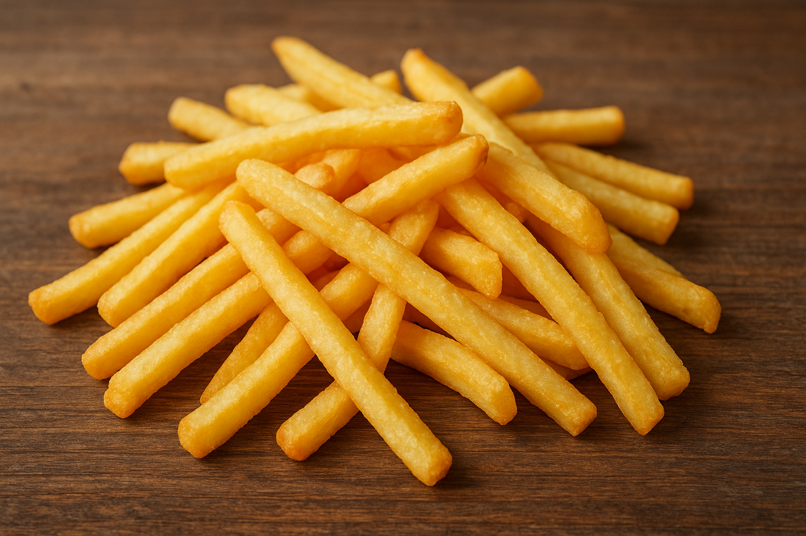

French Fries
Home

Description
French fries, also known as chips or frites in some regions, are a popular snack and side dish consisting of deep-fried potatoes cut into thin strips.
They are typically seasoned with salt and can be served with various condiments like ketchup, mayonnaise, or vinegar. French fries can be enjoyed on their own or as a side with meals like hamburgers and fish.
While the exact origin is debated, some sources point to Belgium as a likely birthplace in the late 17th century, where villagers fried potatoes as a substitute for fish during winter. Others credit French street vendors with popularizing the dish in the late 18th and 19th centuries.
Ingredients
- 2½ pounds russet potatoes, peeled or unpeeled.
- 1 cup vegetable oil for frying
- 2tbs salt
- 1tsp sugar
- 1 bowl of cold water
Steps
- Slice potatoes into desired size.
- Rinse in collender to remoe as much starch as possible.
- Soak cut fries in a bowl of cold water for ar least 10 minutes. This will help extrude excess starch from the fries.
- While their soaking is a good time to add the oil to a pan and begin heating it to 325F
- Rinse fries in collender again.
- Once the oil is up to heat put fries in the oil, being careful not to overwhealm the oil. cook them for 5min or until soft
- Remove from oil and place flat on a papertowel to breath. This is where you can add another batch if you have more fries.
- Now heat the oil 375F and put fries back in to crisp. They will turn golden pretty fast at this temp so watch them and pull them when they are your desired color.
- Line a bowl with a paper towel and put the cooked fries in it.
- Combine the salt and sugar and season to your liking.
- Enjoy!